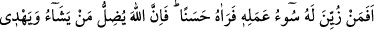
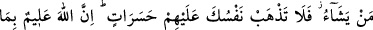
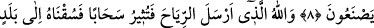
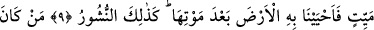
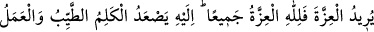
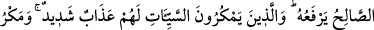
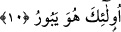

RÜZGÂRLARI GÖNDERİP DE BULUTU
HAREKETE GEÇİREN ALLAH’TIR
8. Kötü işi kendisine güzel gösterilip de onu güzel gören kimse (kötülüğü hiç
istemeyen kimseye benzer) mi? Allah dilediğini sapıklığa yöneltir, dilediğini doğru
yola iletir. O halde onlar için üzülerek kendini helak etme. Allah onların ne
yaptıklarını biliyor.
9. Rüzgârları gönderip de bulutu harekete geçiren Allah’tır. Biz onu ölü bir
bölgeye göndeririz de ölümünden sonra toprağa onunla hayat veririz. Ölülerin
yeniden dirilmesi de böyle olacaktır.
10. Kim izzet ve şeref istiyor idiyse, bilsin ki, izzet ve şerefin hepsi Allah’ındır.
O’na ancak güzel sözler yükselir (ulaşır). Onları da Allah’a amel-i sâlih ulaştırır.
Kötülüklerle tuzak kuranlara gelince, onlar için çetin bir azap vardır ve onların
tuzağı bozulur.
“Kötü işi kendisine güzel gösterilip de onu güzel gören kimse (kötülüğü hiç
istemeyen kimseye benzer) mi?” Mânâ şöyledir: Her iki fırkanın da âkıbetleri belli
olduktan sonra şeytan tarafından küfür kendisine süslü gösterilip iyice küfre dalan
kimse, hiç küfrü çirkin gören ve ondan sakınan îman ve sâlih ameli seçen kimse gibi
olur mu? Hayır, olmaz. Zira kişi sapıklığı güzel görüp tercih ettiği için “Allah
dilediğini sapıklığa yöneltir” ve onu aşağıların en aşağısına atar; “dilediğini” yâni
hidâyeti tercih edeni de “doğru yola iletir.” Onu da yücelerin en yücesine yükseltir.
“O halde onlar için üzülerek kendini helak etme.”
Âyetin başındaki “ ”, sebebiyet bildirir. Çünkü Allah’ın dilediğini sapıklığa
yöneltmesi ve dilediğini de doğru yola iletmesi hükmü, hasret ve üzüntüyü